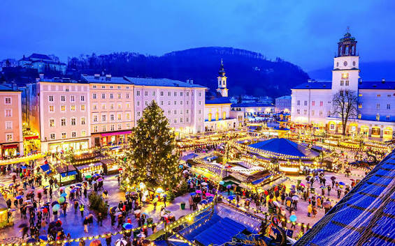

Cercada pelas montanhas nevadas dos Alpes austríacos, Salzburgo é a cidade natal do compositor Mozart e celebra o fim de ano com uma atmosfera histórica e musical. Seus mercados centenários de Advento atraem visitantes com corais ao vivo, luzes douradas e aromas de castanhas assadas e biscoitos de gengibre.
Projeto Desenvolvimento Web - Destino: Salzburgo, Áustria